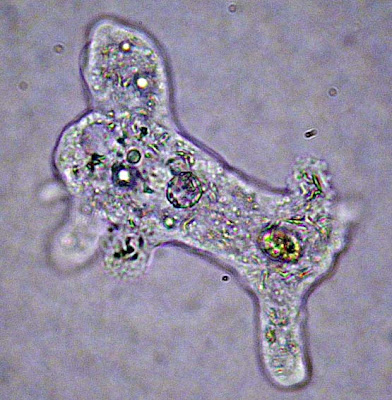
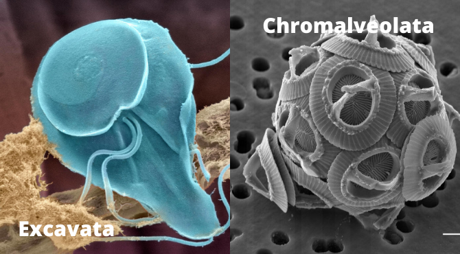
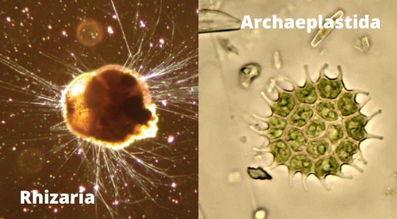
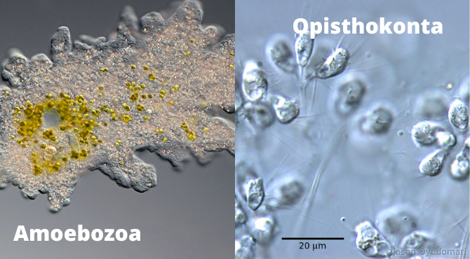
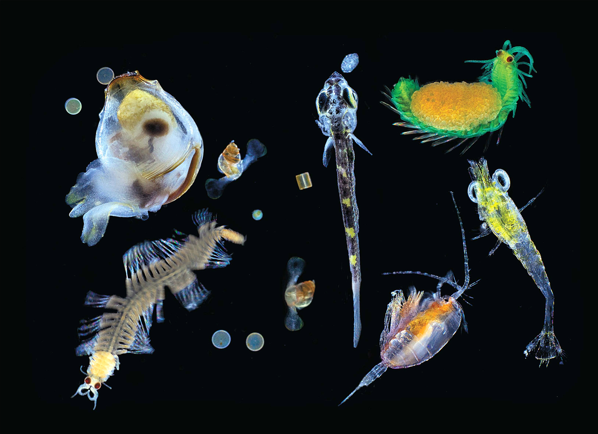
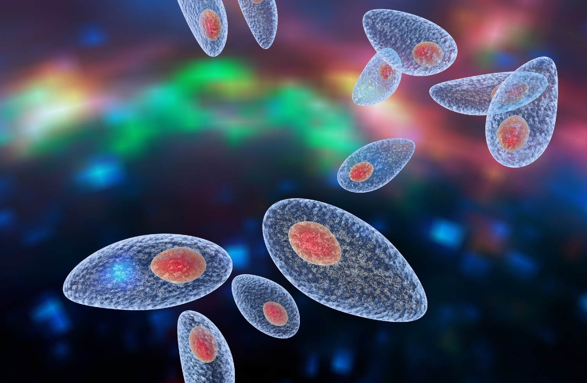

What are protists?
Picture of an amoeba.
Protists are anything that isn't classified as an animal, plant, fungi, which probably doesn't help description wise. Though, protists are derived from the Greek word "protistos," meaning the very first.
Protists are a huge group of single-celled and multicellular organisms that have a nucleus. They also have specialized cell machinery called cell organelles that help with a lot of different things in life. In general, most protists live off of their own energy (like algae), but some are heterotrophic (like Amoeba) or even parasitic (Trypanosoma protozoa).
What are some classifications of protists?
There are 6 classifications of protists, called supergroups.
The first supergroup is called Excavata/ They are normally assymetrical with a feeding groove "excavated" from one side. Most of the protists are here in this group. (Giardia duodenalis)
The second supergroup is called Chromalveolata, derived from a common ancestor that engulfed a photosynthetic red algal cell. Though, this hypothesis is subject to change. (Gephyrocapsa oceanica)
The third supergroup is called Rhizaria. They have a unique way of getting around, called cytoplasmic streaming, where they have a grappling hook of some kind called pseudopodia. The pseudopodia can anchor to any surface and move using it. (Ammonia tepida)
The fourth supergroup is called Archaeplastida. This group is important as it is the closest relative to land plants. All Archaeplastida are the result of an endosymbiotic relationship between a heterotrophic protist and a cyanobacterium. (Pediastrum sp.)
The fifth supergroup is called Amoebozoa. They also have pseudopodia, but they present as tubes rather than hair-like ones like in Rhizaria. Amoebae with tube or lobe-shaped pseudopodia are morphologically classified as amoebozoans. (Amoeba proteus)
The last supergroup is called Opisthokonta. Like Archaeplastida, this is a common ancestor, but instead of plants, it is of all animals. The structures in this group resemble similar mechanisms in sponge to filter bacteria for ingestion of the protist. (Codosiga sp.)
Why are protists important and why do we need to study them?
Protists are important because they could be described as a double-edged sword. Some we can use for our own benefit, like protists can help make cheese and ice cream, but some are really horrible and cause awful diseases that could harm us. They also impact the world, as lots of animals feed on them in the oceans, but some can harm the world too. They both have their benefits and wrongs, and that's why we have to study them.
Example of an interesting protist!
One interesting example of a cool protist is Toxoplasma gondii. This protist is a parasite that helps felines capture their prey by lowering their predator aversion. There have been studies of this parasite causing certain mental effects, though not serious. They have a high prevalence within the human population.
